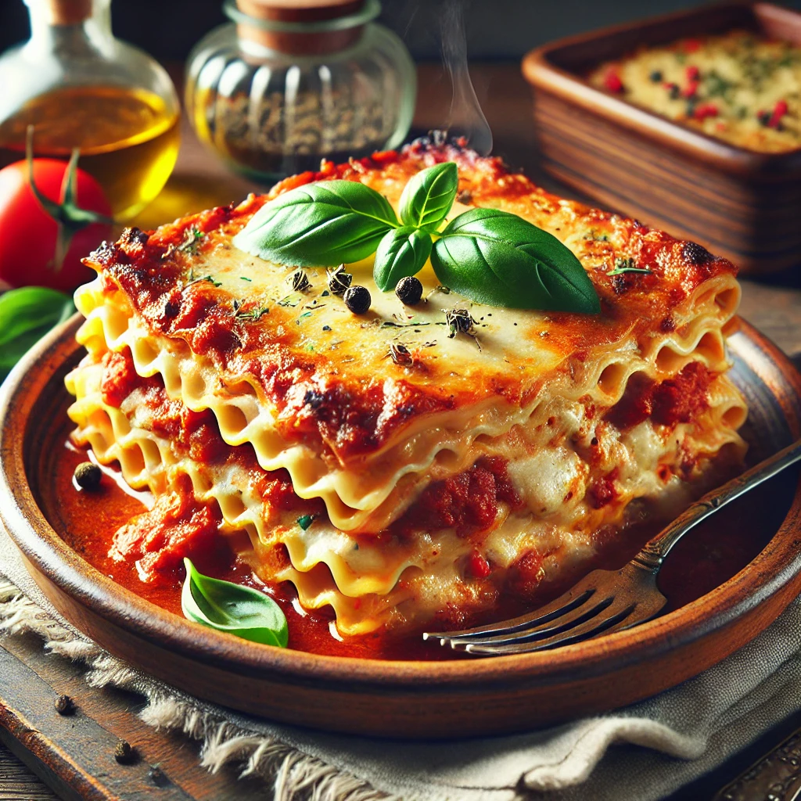
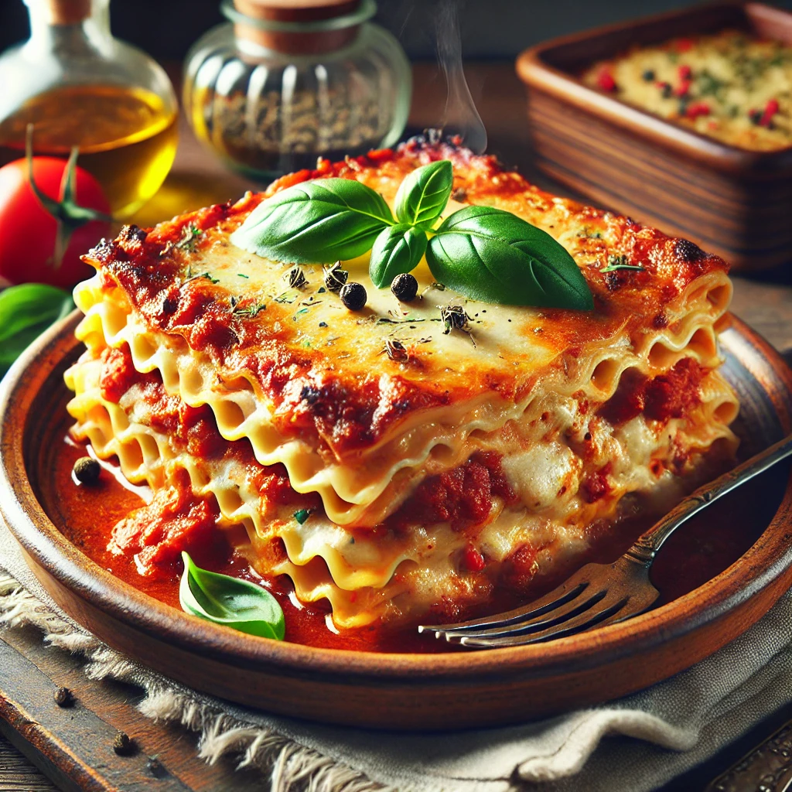

Lasagne
Ingrédients
- 12 feuilles de lasagne
- 500g de viande hachée
- 1 oignon émincé
- 2 gousses d'ail hachées
- 800g de tomates concassées
- 200g de sauce tomate
- 200g de mozzarella râpée
- 100g de parmesan râpé
- 500ml de béchamel
- Huile d'olive
- Sel et poivre
- Origan séché
- Basilic frais
Instructions
- Préchauffer le four à 180°C (350°F).
- Faire revenir l'oignon et l'ail dans une poêle avec un peu d'huile d'olive.
- Ajouter la viande hachée et cuire jusqu'à ce qu'elle soit dorée.
- Incorporer les tomates concassées et la sauce tomate, assaisonner avec du sel, du poivre et de
l'origan séché. Laisser mijoter pendant 20 minutes.
- Dans un plat à gratin, étaler une couche de sauce à la viande, puis une couche de feuilles de
lasagne.
- Ajouter une couche de béchamel, puis une couche de mozzarella râpée.
- Répéter les couches jusqu'à épuisement des ingrédients, en terminant par une couche de béchamel et
de fromage râpé.
- Parsemer de parmesan râpé et enfourner pendant 40 minutes, jusqu'à ce que le dessus soit doré et
bouillonnant.
- Sortir du four et laisser reposer 10 minutes avant de servir avec du basilic frais.